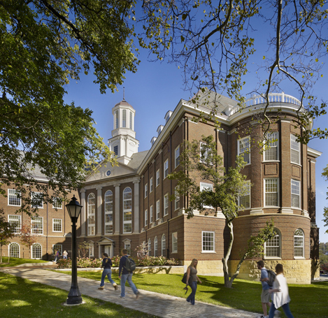

Washington & Jefferson College
Ranking: 96 in American National Liberal Arts Colleges
Number of students: 1,328
Quantity of Campus: 1
Foundation year: 1781
Washington & Jefferson College, also known as W & J College or W&J, is a private liberal arts college in Washington, Pennsylvania, in the United States, which is 30 miles (48 km) south of Pittsburgh. The college traces its origin to three log cabin colleges in Washington County established by three Presbyterian missionaries to the American frontier in the 1780s: John McMillan, Thaddeus Dod, and Joseph Smith. These early schools eventually grew into two competing academies and colleges, with Canonsburg Academy, later Jefferson College, located in Canonsburg and Washington Academy, later Washington College, in Washington. These two colleges merged in 1865 to form Washington & Jefferson College. The 60-acre (24 ha) campus, located in Washington, Pennsylvania, has more than 40 buildings, with the oldest dating to 1793. While the college has historically had a difficult relationship with the city of Washington, including clashes over college expansion and finances, recent efforts have been made to improve those relations.
The college's academic emphasis is on the liberal arts and the sciences, with a focus on preparing students for graduate and professional schools. Campus activities include various religious, political, and general interest clubs, as well as academic and professional-themed organizations. The college has a strong history of competing literary societies, dating back before the union of Jefferson and Washington Colleges. Students operate a college radio station, a campus newspaper, and a literary journal. The athletic program competes in NCAA Division III. The football team has been particularly successful over its history, even competing in the 1922 Rose Bowl. A large majority of students participate in intramural athletics. Nearly all students live on campus and roughly one third are members of fraternities or sororities. A number of noteworthy alumni have attended the college or its predecessor institutions, including James G. Blaine, William Holmes McGuffey, and Pete Henry.
What did I do here?
I was an International Student sponsored by the Brazilian Government to study abroad. As part of my graduation I studied for one year at Washington & Jefferson College through the program Science Without Borders. In W&J I took Computer Science courses related to my major and also business classes. Important subjects I took in W&J: Databases Advanced, Networking Foundations, Game Design, Web Design, Entrepreneurship and Data Structures. During my staying in W&J I won a Mylan's Hackaton and one of my games developed during the Game Design class was chosen the best game through a popular election.
